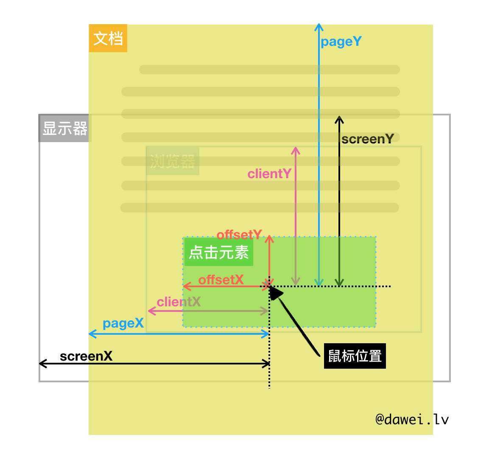

盒子模型
CSS 中的每个元素都被表示为一个矩形的盒子，每个盒子有四个边：content edge, padding edge, border edge, and margin edge。
box-sizing： content-box(默认)，border-box ，padding-box(deprecated)。
content-box 下盒子实际宽度不等于 width，不包括 padding 和 border 部分，布局计算不方便。border-box 下盒子实际宽度与 width 相等。外边距合并(Margin collapsing)
块级元素的上外边距和下外边距有时会合并（或折叠）为一个外边距，其大小取其中的最大者，这种行为称为外边距折叠（margin collapsing），有时也翻译为外边距合并。
浮动元素和绝对定位元素的外边距不会折叠。上外边距和下外边距在没有 content、padding、border 间隔的情况下相遇，就会发生外边距合并，为其中一个元素添加 content、padding、border 使得上下外边距分离，即可取消叠加。
可能发生外边距合并的三种基本情况：
相邻元素之间、父元素与其第一个或最后一个子元素之间、空的块级元素。注意：
- 上述情况的组合会产生更复杂的外边距折叠。
- 即使某一外边距为 0，这些规则仍然适用。因此就算父元素的外边距是 0，第一个或最后一个子元素的外边距仍然会“溢出”到父元素的外面，并且使父元素产生边距效果。
- 如果参与折叠的外边距中包含负值，折叠后的外边距的值为最大的正边距与最小的负边距（即绝对值最大的负边距）的和。
- 如果所有参与折叠的外边距都为负，折叠后的外边距的值为最小的负边距的值。这一规则适用于相邻元素和嵌套元素。
浮动 float
将一个元素放置在 container 的左侧或右侧，允许 text 和 inline 元素环绕它。float使用块布局，在某些情况下会修改display的计算值，inline -> block, inline-block -> block, inline-table -> table, table-cell -> block。对 flex/inline-flex 无效。举个 🌰 float清除浮动
清除浮动是为了清除使用浮动元素产生的影响。浮动的元素，高度会塌陷，而高度的塌陷使我们页面后面的布局不能正常显示。clear
- left: 元素被向下移动用于清除之前的左浮动。
- right: 元素被向下移动用于清除之前的右浮动。
- both: 元素被向下移动用于清除之前的左右浮动。
举个 🌰 clearfix、multi-float-clearfix
1
2
3
4
5
6
7
8
9
10
11
12
13
14
15
16
17
18
19
20
21
22
23
24
25
26
27
28
29
30
31
32
33
34
35
36
37
38
39
40
41
42
43
44
45
46
47
48
49
50
51.container {
width: 400px;
background-color: green;
margin: 10px;
}
.float {
float: right;
width: 200px;
height: 100px;
background-color: red;
}
.container1 {
/* overflow: hidden 亦可，各有优缺点 */
overflow: auto;
}
.container2::after {
content: "";
display: block;
clear: both;
}
.container3::after {
content: "";
display: table;
clear: both;
}
.container4 {
/* 类似 hardcode */
height: 100px;
}
.container5::before,
.container5::after {
content: "";
display: table;
}
.container5::after {
clear: both;
}
.container5 {
zoom: 1;
}
.container6 {
/* 父元素浮动也可清除浮动，有副作用 */
float: right;
}1
2
3
4
5
6
7
8
9
10
11
12
13
14
15
16
17
18<div class="container container1">
<div class="float"></div>
</div>
<div class="container container2">
<div class="float"></div>
</div>
<div class="container container3">
<div class="float"></div>
</div>
<div class="container container4">
<div class="float"></div>
</div>
<div class="container container5">
<div class="float"></div>
</div>
<div class="container container6">
<div class="float"></div>
</div>块格式化上下文（Block Formatting Context，BFC）
浮动元素和绝对定位元素，非块级盒子的块级容器（例如，inline-block、table-cells 和 table-captions），以及 overflow 值不为 visiable 的块级盒子，都会为他们的内容创建新的 BFC（块级格式上下文）。在 BFC 中，盒子从顶端开始垂直地一个接一个地排列，两个盒子之间的垂直的间隙是由他们的 margin 值所决定的。在一个 BFC 中，两个相邻的块级盒子的垂直外边距会产生折叠。
在 BFC 中，每一个盒子的左外边缘（margin-left）会触碰到容器的左边缘（border-left）。对于从右到左的格式来说，则触碰到右边缘。
BFC 中的元素的布局是不受外界的影响（我们往往利用这个特性来消除浮动元素对其非浮动的兄弟元素和其子元素带来的影响。）并且在一个 BFC 中，块盒与行盒（行盒由一行中所有的内联元素所组成）都会垂直的沿着其父元素的边框排列。
动画实现
css 实现动画与 js 不同，css 是定义关键帧，js 则是定义渲染页面与运行时间差的关系。选择器
选择器的特殊性分成 4 个权重等级：- 行内样式 +1000
- id 选择器 +100
- 类、伪类、属性选择器 +10
- 类型、伪元素选择器 +1
居中
1
2
3
4
5
6// flex 算是最优解，指哪打哪，特别方便
.container {
display: flex;
justify-content: center;
align-items: center;
}1
2
3
4
5
6// block 元素 margin
.block-ele {
display: block;
margin-left: auto;
margin-right: auto;
}1
2
3
4// inline 元素 text-align
.inline-ele {
text-algin: center;
}1
2
3
4
5
6
7
8
9
10
11
12
13
14
15// 知道宽高的情况下
.container {
position: relative;
}
.child {
box-sizing: border-box;
position: absolute;
height: 50px;
width: 100px;
top: 50%;
left: 50%;
margin-top: -25px;
margin-left: -50px;
}1
2
3
4
5
6
7
8
9
10
11
12
13
14// 不知道宽高的情况下
.container {
position: relative;
}
.child {
box-sizing: border-box;
position: absolute;
height: 60%;
width: 50%;
top: 50%;
left: 50%;
transform: translate(-50%, -50%);
}css 单位
- rem
html 元素的 font-size * 当前元素的 rem = 当前元素的 px，响应式布局利器 - em
根据自身的 font-size * 当前元素的 em = 当前元素的 px，按钮根据文字的大小设置对应比例的 padding 比较好用 - vh
1/100 的视口高度，满屏布局的时候比较好用 - vw
1/100 的视口高度 - vmin / vmax
vh 和 vw 依据于视口的高度和宽度，相对的，vmin 和 vmax 则关于视口高度和宽度两者的最小或者最大值。 - ex
小写 x 的高度 - ch
和数字 0 的宽度
- rem
响应式布局
基于媒体查询和 rem 的响应式布局实践meta
浏览器引擎前缀
- CSS 前缀 Edit
主流浏览器引擎前缀:
-webkit- (谷歌, Safari, 新版 Opera 浏览器等)
-moz- (火狐浏览器)
-o- (旧版 Opera 浏览器等)
-ms- (IE 浏览器 和 Edge 浏览器) - API 接口前缀
WebKit (谷歌, Safari, 新版 Opera 浏览器等)
Moz (火狐浏览器)
O (旧版 Opera 浏览器等)
MS (IE 浏览器 和 Edge 浏览器) - API 属性和方法前缀
webkit (谷歌, Safari, 新版 Opera 浏览器等)
moz (火狐浏览器)
o (旧版 Opera 浏览器等)
ms (IE 浏览器 和 Edge 浏览器)
- CSS 前缀 Edit
页面导入样式时，使用
<link>和@import有什么区别？@import是 CSS 加载样式的方式，<link>是 HTML 加载样式的方式。页面被加载的时，<link>会同时被加载，而@import引用的 CSS 会等到页面被加载完再加载。tips 碰撞检测
圣杯布局
float 实现真是被 Flex 爆的体无完肤，flex 实现 css 语义清晰，float 满满的黑科技糅杂在一起。
MouseEvent offsetX/Y, pageX/Y, clientX/Y, screenX/Y
display
position
前端基础拾遗之CSS篇
# CSS